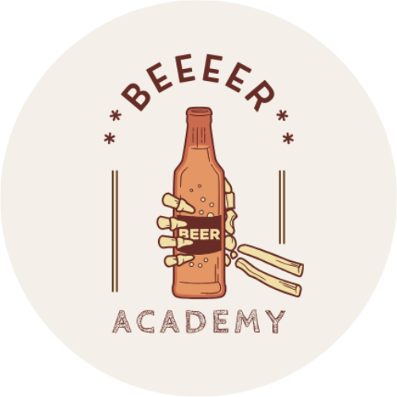

ABOUT
BEEEER ACADEMYについて

BEEEER ACADEMYは、
ビール好きによるビール好きのためのビール学習サイトです
------
Beer is an
Escape from dull routine, and
Energy boost for tomorrow! Beer can even power the
Economy! Well, well, well... Whatever you do,
Enjoy a great pint! Now, are you
Ready???
ビールは退屈な日常からの脱出, そして明日への活力！
ビールで経済だってまわせるんだから！
まぁまぁ何はともあれ最高の一杯を楽しもうよ！
さぁ、準備はOK？？？